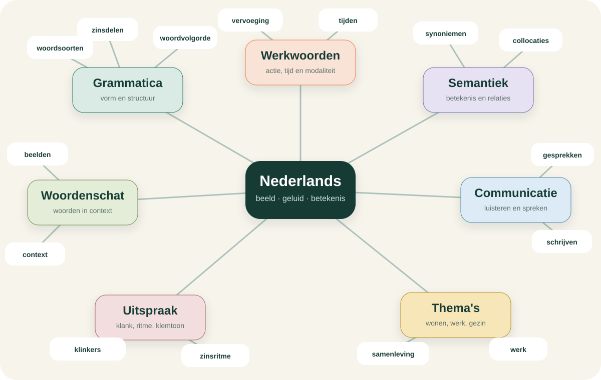
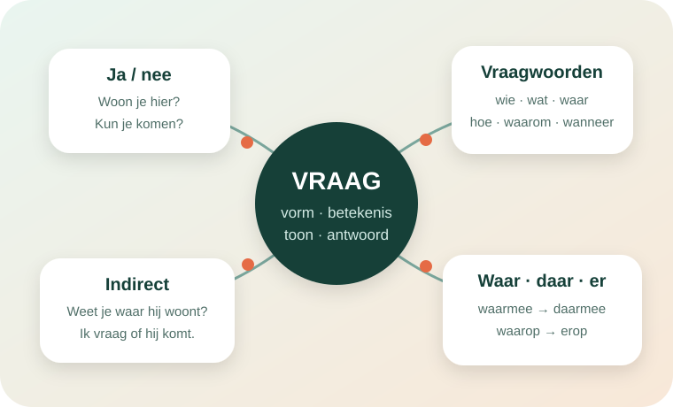
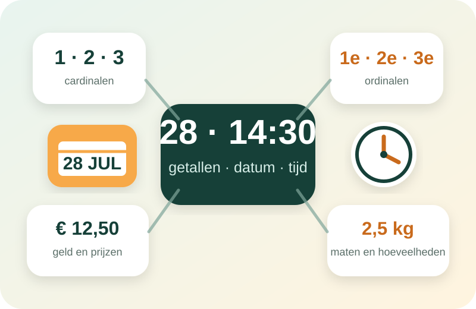
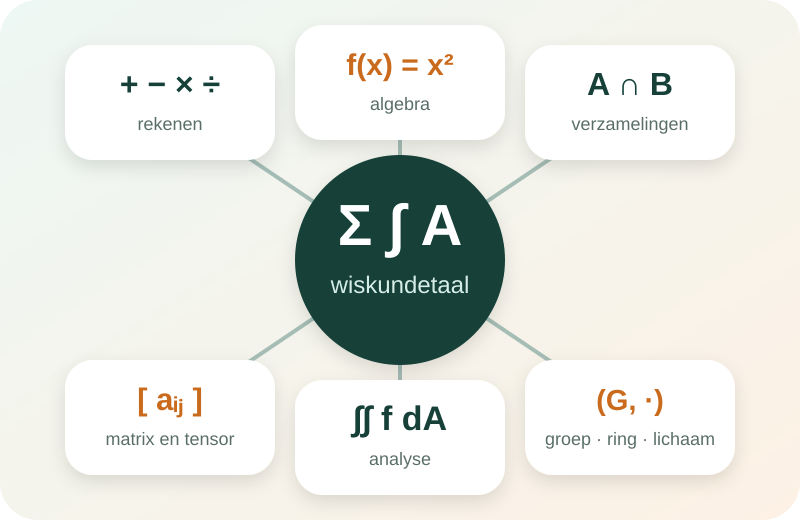

Ritme
72 minDeze week
ma
di
wo
do
vr
za
zo
Leer Nederlands zoals je het gebruikt: eerst zien en horen, daarna begrijpen en zelf toepassen.
Luister naar dezelfde zin op normale en langzame snelheid.
Nederlandse stem wordt gecontroleerd…Leesbaar contrastTekst blijft zichtbaar in dag- en nachtmodus.
KleurveiligBetekenis wordt nooit alleen met kleur getoond.
Aanpasbare tekstKies kleiner, normaal of groter.
Audio-ondersteuningWoorden, zinnen en dialogen met audio.
NachtmodusRustige donkere oppervlakken met hoog contrast.
Je herkent de woorden al goed. Let nu op de positie van het werkwoord wanneer een zin met tijd begint.
Kijk eerst naar de situatie. Luister daarna naar de zin en ontdek hoe de woordvolgorde verandert.
In een gewone hoofdzin staat de op de tweede plaats.
Zet de woorden in de juiste volgorde. Begin met het tijdwoord.
Tik de woorden in de juiste volgorde aan.
Een duidelijke route van dagelijkse basis naar professioneel en natuurlijk Nederlands.
Kies wat je vandaag wilt kunnen. Oefen vragen, natuurlijke antwoorden, vervolgvragen en uitspraak zonder de bestaande niveauroute te verlaten.
Vier compacte thema’s met begroetingen, afscheid, jezelf voorstellen, hulp vragen, cijfers, tijd en de minimaal nuttige taal voor je eerste gesprekken.
Elke les volgt dezelfde heldere route: kijk naar de situatie, luister naar gecontroleerd Nederlands, begrijp de vorm en gebruik de taal zelf.
Verdiep woordenschat, grammatica, luistervaardigheid en praktische communicatie in wonen, samenleving, gezin, winkels, opleidingen, werk en gemeente.
De bekende thema’s keren terug met preciezere werkwoorden, langere gesprekken, mening, oorzaak-gevolg, ervaringen en professionele communicatie.
Analyseer, onderbouw en nuanceer rond literatuur, milieu, relaties, consumentengedrag, cultuur en samenleving met natuurlijke vaste combinaties.
Analyseer aannames, verbind bronnen en perspectieven, bemiddel in complexe gesprekken en schakel bewust tussen academisch, professioneel en publiek register.
Ontleed discours, ideologie, retoriek en meerstemmigheid. Formuleer zeer complexe ideeën spontaan, compact en stilistisch doelgericht voor uiteenlopende publieken.
Verken grammatica, werkwoorden, semantiek, uitspraak en communicatie als één verbonden systeem.

Elk nieuw concept toont betekenis, voorbeelden, uitspraak en verwante onderwerpen.
Doorzoek de leeromgeving als één semantisch netwerk. Een werkwoord is verbonden met zijn betekenis, gecontroleerde synoniemen, thema’s, grammatica, voorbeelden, oefeningen en open inhoudscontroles.
Een synoniem wordt alleen als gecontroleerde relatie getoond wanneer de werkwoordfiche handmatig is nagekeken. Ontbrekende definities, synoniemen, gebruiksnotities en voorbeelden verschijnen als controlepunten.
Open deze pagina om de kennisgraaf te laden.
De graaf wordt geladen wanneer deze pagina wordt geopend.
Kies een node om definities, synoniemen, gebruiksplaatsen en controles te bekijken.
Regels in eenvoudige taal, met visuele modellen, audio en verbindingen naar andere concepten.
Zoek op functie, niet alleen op woordsoort.
Vergelijk voegwoorden, bijwoorden en voorzetselgroepen die dezelfde relatie uitdrukken.
Leer ja/nee-vragen, open vragen, indirecte vragen en het complete systeem met waar, daar, er en hier + voorzetsel.

Elke les combineert zinsvolgorde, betekenis, register, audio en contrasten tussen personen en zaken.
Vergelijk vraag, nadrukkelijke verwijzing, neutrale verwijzing en nabijheid.
Leer cardinalen, ordinalen, prijzen, telefoonnummers, kalender, kloktijd, duur, frequentie en maten in natuurlijk Nederlands.

Dezelfde getallentaal komt terug in adressen, prijzen, afspraken, historische perioden en professionele rapportages.
Leer de Nederlandse woorden voor rekenen, algebra, verzamelingen, matrices, sommatie, integralen, tensoren en abstracte structuren.

Elke fiche geeft de Nederlandse naam, een korte notie, een symbool of formule, een uitgesproken voorbeeld en verwante begrippen.
Een beknopte begrippenatlas voor basisfysica, mechanica, elektromagnetisme, velden, relativiteit, kwantummechanica, astronomie, golven en thermodynamica.
Elke kaart bevat bewust alleen het domein, de Nederlandse naam en een korte definitie. De luidspreker helpt bij de uitspraak.
Een woordenatlas voor programmeren, datastructuren, architectuur, data, cloud, DevOps, beveiliging, observability en kunstmatige intelligentie.
Elke kaart toont alleen het domein, de Nederlandse naam en een korte definitie. Zo blijft de atlas snel scanbaar en bruikbaar tijdens werk of studie.
Zes uitgebreide begrippenatlassen voor bedrijfskunde, marketing, economie, zorg, overheid en bouw. Elke kaart geeft de Nederlandse naam, het niveau en een heldere definitie.
Bestudeer niet alleen losse regels, maar complete patronen: welk woord kies je, wat betekent het en waar staat het in de zin?
Zoek in 1.886 werkwoorden. Vergelijk regelmatige en onregelmatige vormen en herken beweging, verandering, toestand, handeling, gebeurtenis en modaliteit.
Leer woorden niet als losse vertalingen, maar als herkenbare begrippen in echte zinnen.
De scènes gebruiken gecontroleerde Nederlandse tekst en de beste beschikbare nl-NL-stem van je apparaat.
De twijfelachtige WAV-bestanden uit het oorspronkelijke repo worden hier niet afgespeeld. Je hoort de gecontroleerde tekst via Nederlandse spraaksynthese.
Oefen met originele artikelen, begripvragen, klachten, meningen, voorkeuren en professionele e-mails. B2 bevat vragen in NT2-II-stijl, maar geen officiële examenvragen.
Meer dan achtduizend originele oefeningen, verdeeld over A0–C2, met extra dekking voor connectors, bijwoorden, voorzetsels, vragen, tijden, scheidbare werkwoorden, lezen en schrijven. Je fouten en herhalingen horen alleen bij het actieve profiel.
Je resultaten worden apart bewaard voor het actieve profiel. Er worden geen trackingcookies gebruikt en niets wordt naar een server gestuurd.